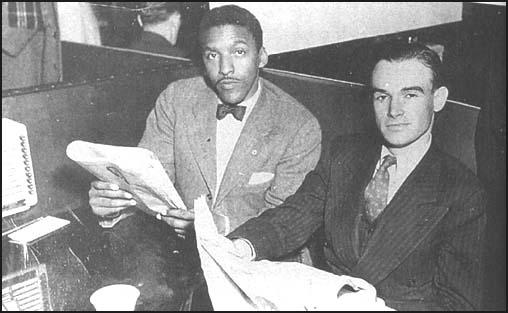
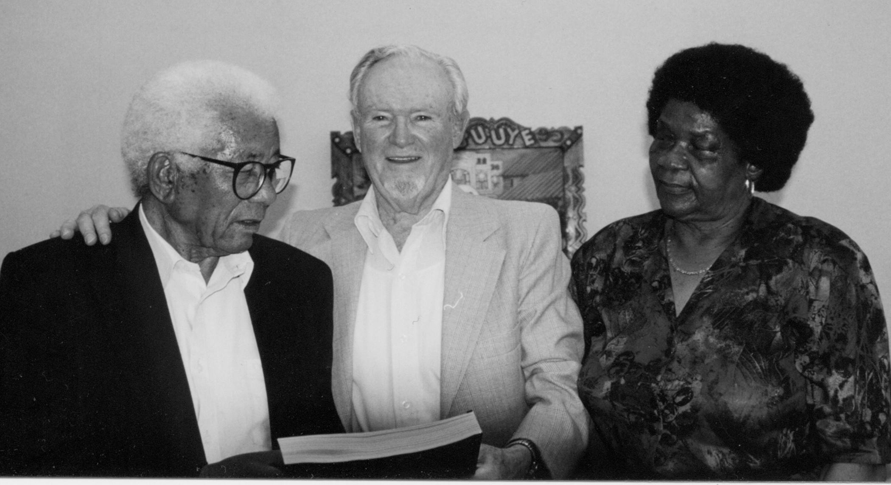
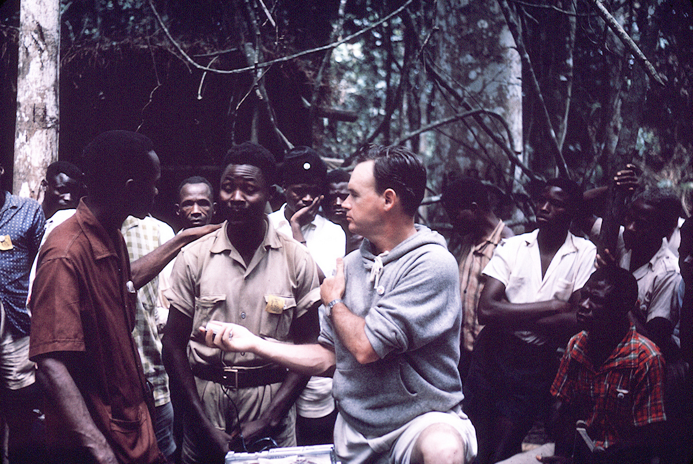

Dear Friends,
Today is George Houser's 99th birthday!
 One of the most important yet least-heralded activists of the 20th century, George's name is synonymous with the early history of the Fellowship of Reconciliation, the foundations of the civil rights movement, and the growth of the international solidarity movement with African liberation struggles. One of the most important yet least-heralded activists of the 20th century, George's name is synonymous with the early history of the Fellowship of Reconciliation, the foundations of the civil rights movement, and the growth of the international solidarity movement with African liberation struggles.
The Houser family has requested a shower of birthday cards to celebrate George. Please reply to this email with a birthday message, and we will forward the messages to his family to shower George with love and appreciation.
George joined FOR in 1938 at age 22. Two years later, while attending Union Theological Seminary, George and 19 other seminarians decided to resist the World War II draft, known as the Selective Training and Service Act.
George was imprisoned for a year for his pacifist-rooted act of draft resistance. Following his release in 1941, he joined FOR's national staff as its Youth Secretary.
For the next several years, Houser and other FOR organizers utilized creative direct action strategies to resist racial segregation and to likewise oppose the nation's participation in World War II. Stationed in Chicago, in 1942 George cofounded the Congress of Racial Equality.
Five years later, CORE and FOR cosponsored the Journey of Reconciliation, known as the "First Freedom Ride," organized by George and Bayard Rustin. (George is the only living member of the 16 original participants of that landmark effort.)
In the late 1940s and early '50s, George played a central role in the nascent global effort to support African anti-colonial liberation movements.
Long-time racial discrimination in South Africa was formalized in 1948 as the "apartheid" political system. Working with South African activists like ANC President Albert Luthuli, emerging ANC leader Nelson Mandela, Walter Sisulu (pictured at right with his wife Albertina), and Oliver Tambo, Houser and others organized Americans for South African Reistance in 1952.
In 1954, he traveled to Africa for six months, meeting with leaders of liberation movements. In 1955, he formally left FOR's staff to direct the new American Committee on Africa.
For the next quarter-century, Houser traveled to and from the African continent, working with and supporting African activists as they overthrew the mantle of colonial regimes and birthed new democratic nations. (Extensive reflections on his work with ACOA appear in this 2004 interview by Lisa Brock for the book No Easy Victories.)
As Mwalimu Julius K. Nyerere, first president of Tanzania, testifies in the foreword to Houser's autobiography No One Can Stop the Rain, "It was George Houser who introduced me to people who supported the African anti-colonial struggle. ... All of us who came to the United Nations or the United States during our campaigning for independence received help and encouragement from the ACOA."
 Since his "retirement" from ACOA in 1981 (photo at right of Houser testifying at the U.N. that year), George continued to participate actively in peace and justice movements. He worked closely with ACOA and others to pressure the South African government to end apartheid, which finally found success in 1994 with the nation's first democratic elections that saw Nelson Mandela become president. Since his "retirement" from ACOA in 1981 (photo at right of Houser testifying at the U.N. that year), George continued to participate actively in peace and justice movements. He worked closely with ACOA and others to pressure the South African government to end apartheid, which finally found success in 1994 with the nation's first democratic elections that saw Nelson Mandela become president.
George's efforts were honored in 2010 when he received the Republic of South Africa's Oliver R. Tambo Award, the highest honor given to foreigners. President Jacob Zuma gave the prize to Houser, one of only five U.S. citizens to receive the Tambo prize, noting "his exceptional contribution to the struggle against colonialism, racism, and apartheid."
He also regularly joined the weekly anti-war vigil in Rockland County NY from 2002 to 2009, before he and spouse Jean moved to Santa Rosa CA to be closer to children and grandchildren.
Join us in celebrating the extraordinary life and legacy of George Houser. Please send a message to the Housers by replying to this email. FOR will deliver it this coming week.
In celebration,
 Ethan Vesely-Flad Ethan Vesely-Flad
Director of National Organizing
Fellowship of Reconciliation
Photos: (1) George Houser profile by Doug Hostetter, 2012. (2) Bayard Rustin and Houser sit-in to protest a segregated restaurant in Toledo, Ohio in 1948, from CORE archives. (3) Houser with Walter and Albertina Sisulu, courtesy of George Houser. (4) Houser in Angola in January 1962, from George Houser personal collection given to African Activist archive. (5) George testifying before the U.N. Special Committee Against Apartheid in March 1981, courtesy of African Activist archive.
|